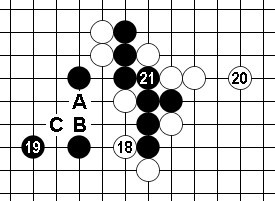

第11届世锦赛对局点评（AT 第2轮）
#1 第11届世锦赛对局点评（AT 第2轮） 作者：失落刀 发表时间：2009-8-22 20:52:04
昨晚坚持到中村茂对Nykl那盘第14手棋实在犯困，下线前在QQ和魏强说了下几盘棋的看法。
“无用老木子 0:23:12
太困了，先睡了。中村这盘拿下没问题。曹冬那盘有点危险，吴镝那盘白老实防就行了。”
一大早迷迷糊糊起来第一件事情就是上网看这三盘棋的结果。老实说中村那盘让我非常意外，尤其是白20的胜负手。
黑方 Nykl 白方 中村茂 布局 水月 结果 黑胜
实战谱1（1~4）直播时候看到“水月”中村茂执白，我当时就对魏强说“水月，感觉不太妙啊”。“水月”之类的马步开局黑5选点多，一不留神就会形成被黑棋控制包打的局面，实战执白下这类开局比较累。本局黑5六打（A~F），A、B是必胜点。D点传统的第三打点黑有优，E点白易被黑棋形成包打局面，F点通大峡月黑有利。中村经过考虑后选择了C点，具体变化看实战进程。
实战谱2（5~9）实战的黑5优势，白6棋形急所防。黑7如直接A变化不好，那也是白棋所期望的。实战的黑7此即最善手，此后白8仅有两个强防。白8如B，黑9-A（9-D，10-E），白10-8，11-9，12-C定型也是一局棋。实战的8给黑方留下诸多选择，这也是中村一贯的风格。黑9棋形要点全局有利，白10中村开始长考。
实战谱3（10~17）白10-A不成立，11-10简单追胜。白10-B全局平衡感觉上的着手。中村长考后的白10强烈的一手，局势趋急，对攻形势不可避免。黑11当然，观战时考虑白12是否可以于14位？那样黑13或许下C位吧。实战的13~17只能如此，17手绝好点！白现在全局无棋，黑可以放手一决胜负。

实战谱4（18~21）白18局后研究必败，18-C感觉较实战的强。不过实战的18有反击的意味（有捉禁的后续手段），这里似乎是与其后白20胜负手相关联的构思（如18-C也就不可能走此后的20了）。在这样复杂的未知局面下苛求每步棋都正确是不现实的，19绝妙手黑必胜！！这种情况下也可以说19是必然的一手，因为在排除无法直接追胜后，又要找到解禁和攻击的契合点，那么也就只剩下实战的19了。白20胜负手，21必然之招。现在的情形很清楚，实战黑如左边无胜，右边也很难再防白棋。20单防A点应该最强，如不交换20单防B点，21-C就简单胜。所以，18、20并结合后面的22来分析，中村对局面的进程是已经计算好的。在被中村逼上绝路后Nykl的小宇宙爆发了
实战谱5（22~47）中村的22防守后，Nyk黑23以下追胜操算紧密，赢的很精彩。过程中如26-39，27-31！如30-40，31-31追胜。Nyk在连胜两轮后渐显黑马本色。中村茂本局防守有些过于用强发挥失常，可能是高强度的比赛对身心消耗比较大，毕竟战神已经50岁了。虽然赛前我和别人打赌中村不能夺冠，但是我在爱五子棋网投票时还是下意识点了中村。毕竟是看着他的棋谱长大的……